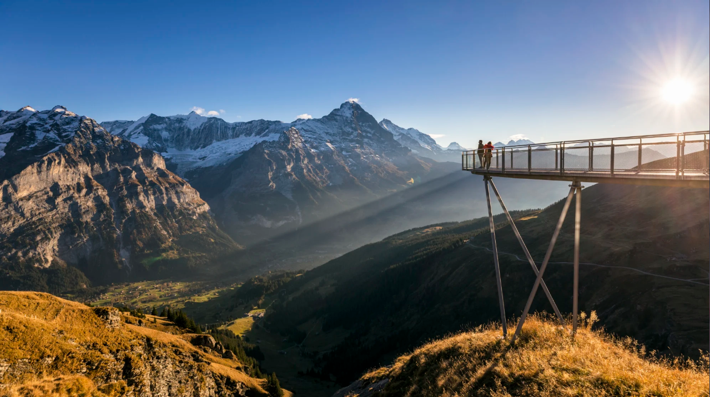
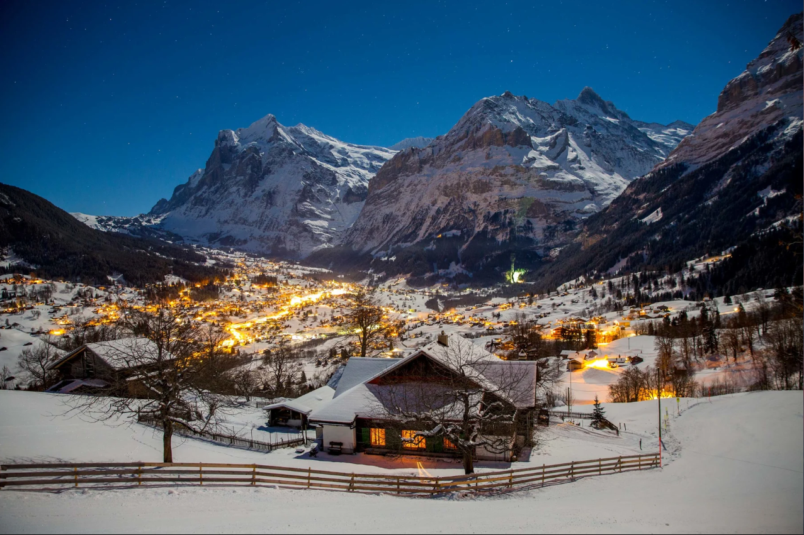
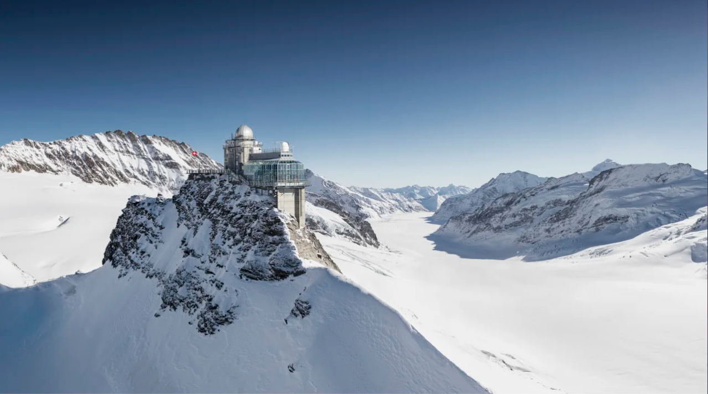
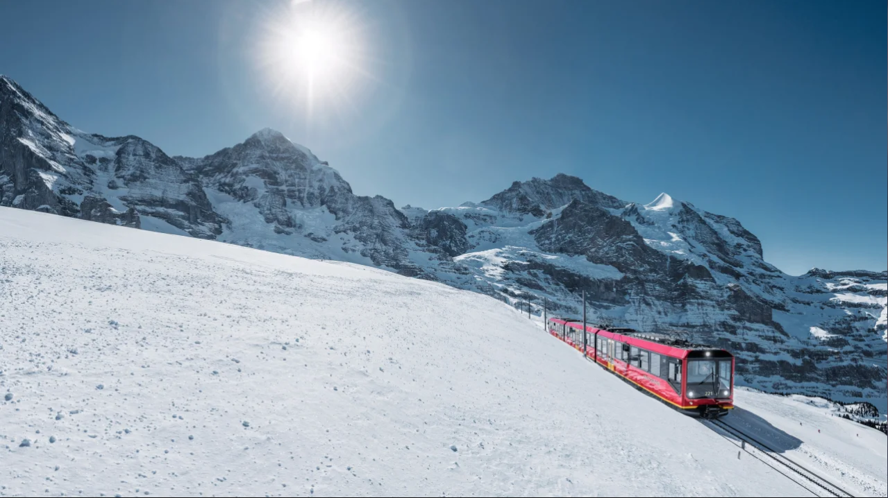
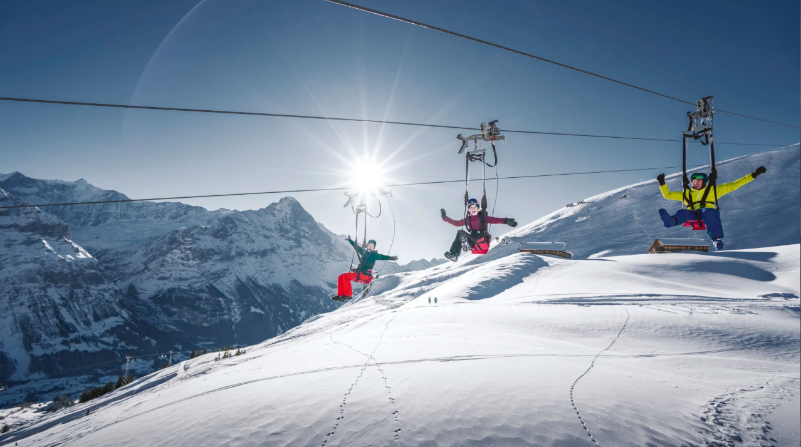
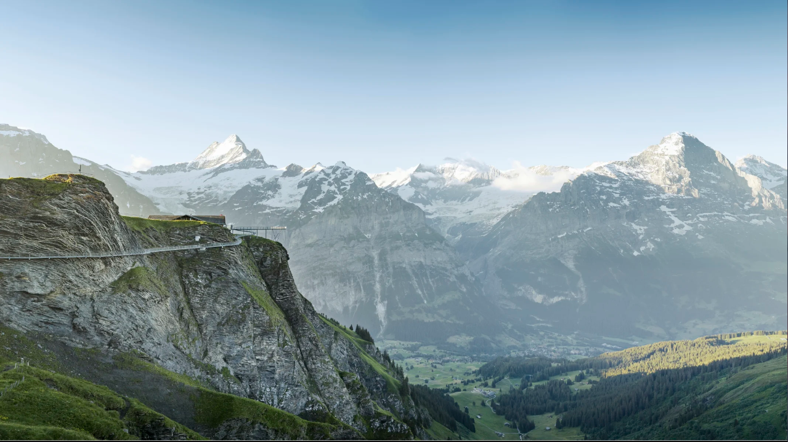

< 그린델발트 >


베르너 오버란트에 위치한 아이거의 마을 그린델발트는 아이거 북면과 베터호른을 간직한 산악 경관으로 둘러싸여 있는 초록의 분지에 위치하고 있다.
산악 경관과 다양한 전망 지점 및 액티비티는 그린델발트를 스위스 및 전세계적으로 가장 인기 있는 휴가 및 여행지 중 한 곳이 될 수 있게 하였다.
이 곳 그린델발트는 환상적인 경관을 바라보며 걸을 수 있는 하이킹도 유명하며, 융프라우 지역에서 가장 대규모의 스키 리조트가 자리하고 있다.
< 융프라우요흐 - Jungfraujoch >


인터라켄 페이지에서 설명했듯이 2020년 12월에 "아이거 익스프레스"가 개통되며 융프라우 철도의 V-케이블웨이 프로젝트가 완성되었고,
그로 인해 인터라켄에서 융프라우요흐까지의 소요시간이 1시간 30분으로 단축되었다.
또한, 그린델발트에 있는 터미널에서 3S 케이블카를 타면 단 15분 만에 직행으로 아이거글레처 역에 올라갈 수 있다.
V-케이블웨이 프로젝트의 완성으로 융프라우요흐의 정상에 올라 파노라마와 모험의 세계를 더욱 더 여유롭게 즐길 수 있게 되었다.
< 그린델발트 피르스트 - Grindelwald First >


그린델발트 피르스트는 아이거 북벽의 웅장한 모습으로 방문객들을 유혹한다.
800m 높이의 프르스트 플라이어와 트로티바이크 스쿠터에 올라타면 치솟는 아드레날린과 짜릿한 스피드를 느낄 수 있다.
피르스트 플라이어는 로프에 매달린 채 최고 시속 84km의 속도로 자유롭게 미끄러져 날아간다.
바흐알프 호수까지 여우롭게 걷는 하이킹도 피르스트 지역에서 놓치지 말아야 할 것 중 하나이다. 산악 역에서 출발해 한 시간이면 세계적으로 유명한 호수와 산의 모습을 볼 수 있다.